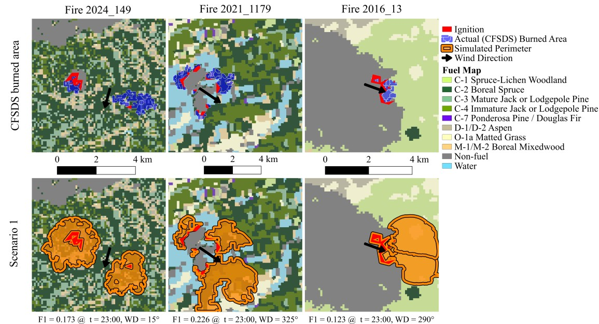

Wildfire behavior models such as the Canadian Fire Behavior Prediction (FBP) system predict wildfire characteristics given fuel, weather, and topography data. The Wildfire Intelligence and Simulation Engine (W.I.S.E.) builds upon this system to predict fire spread, supporting wildfire preplanning and response. Despite their usefulness, assessment of fire spread models remains difficult due to the scarcity of real fire spread data.
A fire spread model assessment procedure is presented comparing fire spread predictions to thousands of satellite-derived daily wildfire boundaries.
W.I.S.E. is used to generate spread predictions for 19,848 individual days of 2,210 wildfires using historical data. Predictions are compared to the Canadian Fire Spread Dataset (CFSDS) using normalized area difference, precision, recall, F1 score, intersection-over-union, and Hausdorff distance.
Using default model parameters, fire spread predictions achieve an average F1 score of 0.259. Diagnostic scenarios are also performed to understand model sensitivity: scenario 2 optimizes burn duration, reaching an average F1 score of 0.498. Scenario 3 optimizes both wind direction and burn duration; F1 score rises to 0.539.
The assessment method provides an effective, logical, and reproducible measure of perimeter prediction accuracy that may be used to assess and improve wildfire behavior prediction models.
